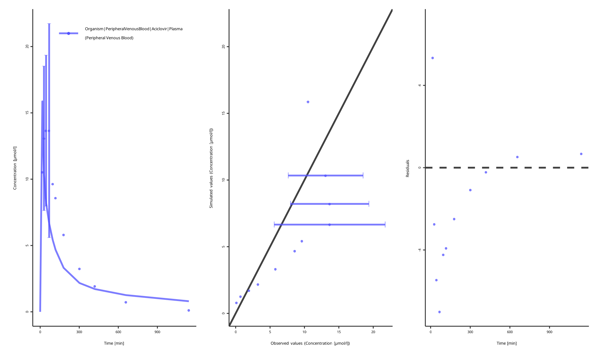
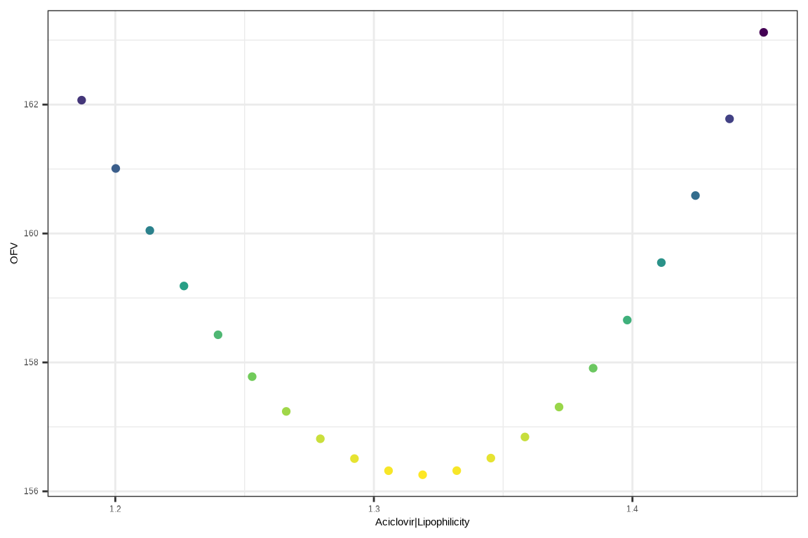
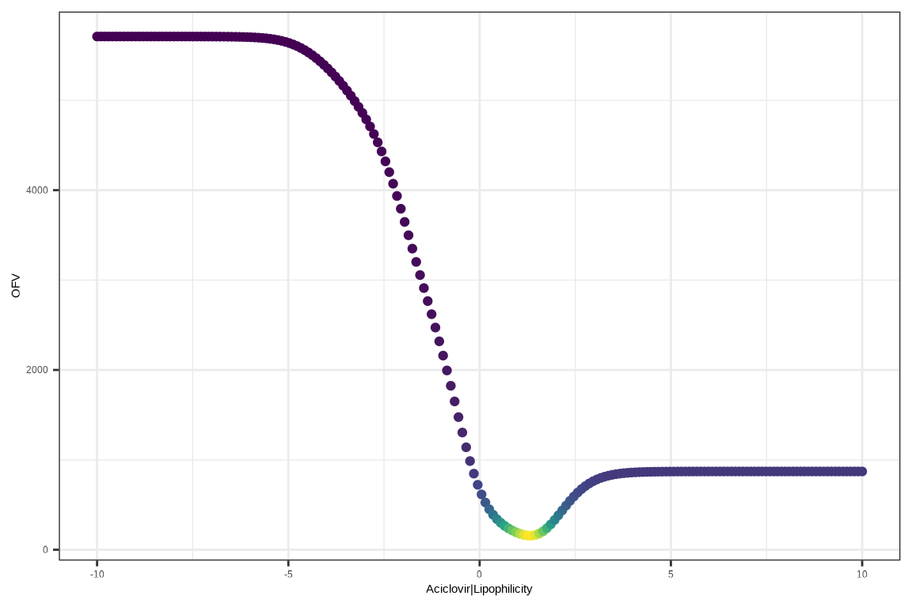
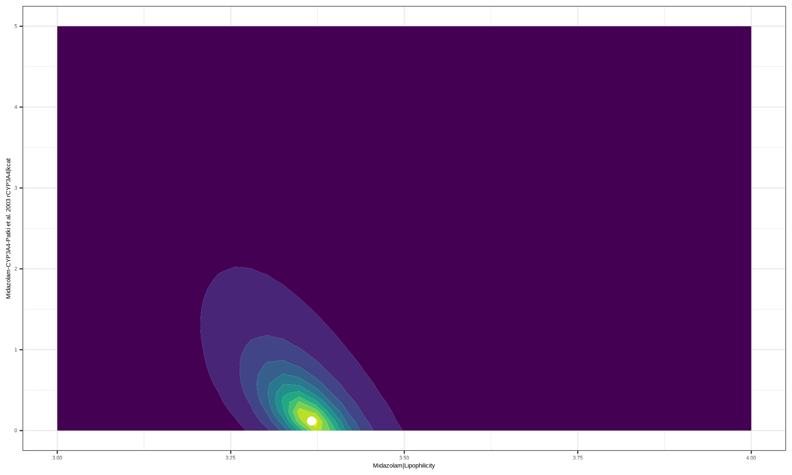
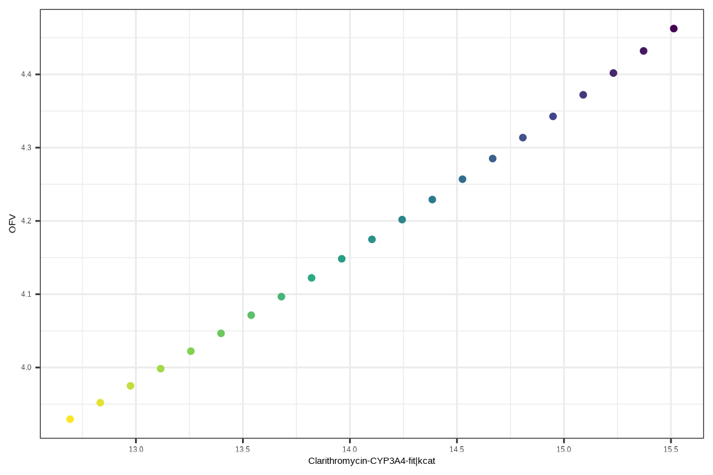
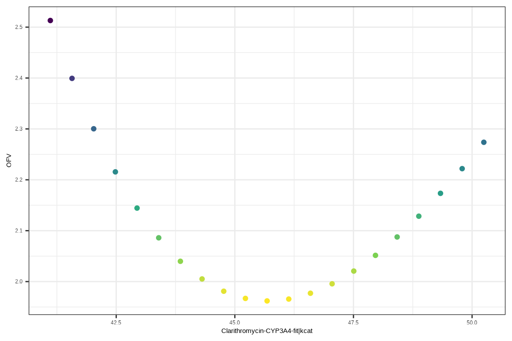
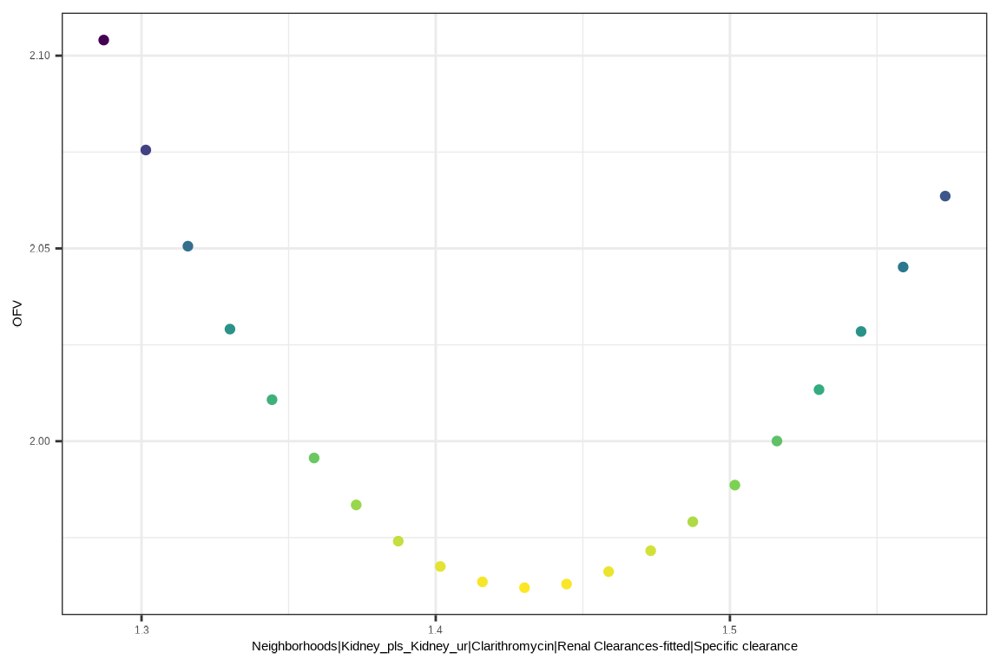
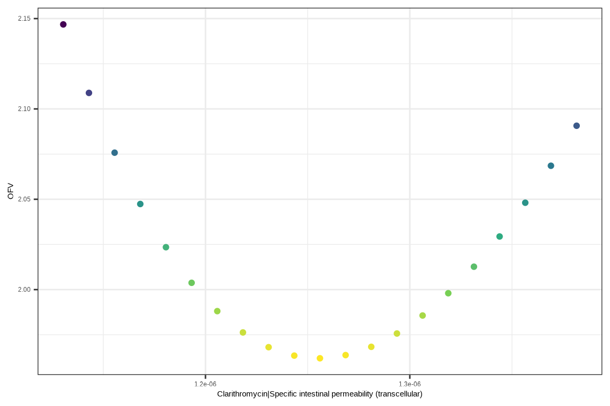

Parameter estimation problems
Biosimulation models often include numerical parameters that determine the outputs of the model. Often, the values of these parameters are not known in advance and have to be identified by matching possible model outputs to the observed data. Finding parameter values that best match the observed data is called parameter estimation.
The ospsuite.parameteridentification package provides a class for setting up such tasks based on existing PKML models, mapping model outputs to observed data and estimating parameters. Below, three models of increasing complexity are used to demonstrate the functionality of the package.
Configuration
The package includes a PIConfiguration class for storing
and re-using the settings of the parameter identification task.
Currently, the implemented options include:
printEvaluationFeedback(logical) indicates if the objective function value should be printed at each iterationtargetFunctionType(possible values: lsq, m3) indicates which objective function should be used to quantify the difference between observed data and simulated curve. The M3 method from Beal, 2001 is an objective function that accounts for possible data points below the lower limit of quantification.algorithm(possible values: HJKB, BOBYQA, DEoptim) indicates which of the optimization algorithms should be used. Control options can be specified as a list and passed topiConfiguration$algorithmOptions. Currently, the BOBYQA method (bound optimization by quadratic approximation) is the default local derivative-based method. For complex problems where the objective function may lack stable numerical derivatives or may have a large number of local minima,HJKBfor derivative-free Hooke-Jeeves algorithm orDEoptimfor global stochastic differential evolution algorithm may be more suitable.
piConfiguration <- PIConfiguration$new()
piConfiguration$printEvaluationFeedback <- TRUEAciclovir model
Extracting parameters from the model
A sample PKML file with the model is shipped with the package:
simulations <- c(loadSimulation("tests/dev/Models/Simulations/Aciclovir.pkml"))
names(simulations) <- "Aciclovir"The parameter corresponding to the lipophilicity of aciclovir is
called Aciclovir|Lipophilicity within the model. The
package has a PIParameter class to represent the varying
parameters in the model and store them along with the starting value,
the lower and the upper bounds of the parameter search space.
parameters <- c(PIParameters$new(parameters = ospsuite::getParameter(
path = "Aciclovir|Lipophilicity",
container = simulations$Aciclovir
)))The default bounds are 0.1 of the starting parameter value and 10.0 of the starting parameter value, but it is often useful to supply parameter bounds from previous knowledge:
parameters[[1]]$minValue <- -10
parameters[[1]]$maxValue <- 10Reading observed data
We need to supply the observed data which we are going to use to identify parameter values.
filePath <- "tests/data/AciclovirLaskinData.xlsx"
dataConfiguration <- createImporterConfigurationForFile(filePath = filePath)
dataConfiguration$sheets <- "Laskin 1982.Group A"
dataConfiguration$namingPattern <- "{Source}.{Sheet}"
observedData <- loadDataSetsFromExcel(xlsFilePath = filePath, importerConfigurationOrPath = dataConfiguration)Here, the importer configuration is created with the
createImporterConfigurationForFile helper function that
tries to guess column names in the Excel file. If you run into errors
while importing the data, try to create the importer configuration from
the PK-Sim GUI, export it as an XML file and re-use it for
importing observed data into R as follows:
filePath <- "tests/data/AciclovirLaskinData.xlsx"
dataConfiguration <- loadDataImporterConfiguration("tests/data/dataImporter_configuration.xml")
observedData <- loadDataSetsFromExcel(xlsFilePath = filePath, importerConfigurationOrPath = dataConfiguration)Mapping data to model outputs
Typically, the observed data show the concentration of the compound
in the peripheral blood flow, but there can be other setups. A class
from the package that matches the model outputs and the observations is
called PIOutputMapping, for example:
outputMapping <- PIOutputMapping$new(quantity = getQuantity("Organism|PeripheralVenousBlood|Aciclovir|Plasma (Peripheral Venous Blood)",
container = simulations$Aciclovir
))
outputMapping$addObservedDataSets(observedData$`AciclovirLaskinData.Laskin 1982.Group A`)
outputMapping$scaling <- "lin"
outputMappings <- c(outputMapping)Running parameter estimation
After the outputMappings, simulations,
parameters and piConfiguration objects are
created, they are used in an instance of the
ParameterIdentification class as follows:
task <- ParameterIdentification$new(
simulations = simulations,
parameters = parameters,
outputMappings = outputMappings,
configuration = piConfiguration
)
taskResults <- task$run()If piConfiguration$printEvaluationFeedback is set to
TRUE, each iteration will print a single line with the
current objective function value, to track the performance of the
optimization algorithm, such as below:
#> Running optimization algorithm: BOBYQA
#> fneval 1: parameters -0.097, target function 778
#> fneval 2: parameters -0.097, target function 778
#> fneval 3: parameters -0.097, target function 778
#> fneval 4: parameters 4.9, target function 869
#> fneval 5: parameters -5.1, target function 5650
#> fneval 6: parameters 2.31, target function 518
#> fneval 7: parameters 2.22, target function 468
#> fneval 8: parameters 2.02, target function 365
#> fneval 9: parameters 1.64, target function 201
#> fneval 10: parameters 1.27, target function 157
#> fneval 11: parameters 1.22, target function 160
#> fneval 12: parameters 1.31, target function 156
#> fneval 13: parameters 1.36, target function 157
#> fneval 14: parameters 1.32, target function 156
#> fneval 15: parameters 1.31, target function 156
#> fneval 16: parameters 1.32, target function 156
#> fneval 17: parameters 1.32, target function 156
#> fneval 18: parameters 1.32, target function 156
#> fneval 19: parameters 1.32, target function 156
#> fneval 20: parameters 1.32, target function 156
#> fneval 21: parameters 1.32, target function 156
#> fneval 22: parameters 1.32, target function 156
#> Post-hoc estimation of hessian
#> fneval 23: parameters 1.32, target function 156
#> fneval 24: parameters 1.32, target function 156
#> fneval 25: parameters 1.45, target function 163
#> fneval 26: parameters 1.19, target function 162
#> fneval 27: parameters 1.38, target function 158
#> fneval 28: parameters 1.25, target function 158
#> fneval 29: parameters 1.35, target function 157
#> fneval 30: parameters 1.29, target function 157
#> fneval 31: parameters 1.34, target function 156
#> fneval 32: parameters 1.3, target function 156Diagnostics
The resulting object contains:
-
taskResults$par: a vector of point estimates for each of the parameters -
taskResults$lwrandtaskResults$upr: vectors with lower bounds and upper bounds for the 95% confidence interval for each of the parameters -
taskResults$cv: a vector with coefficient of variation (standard deviation over point estimate, in percents) for each of the parameters -
taskResults$valueis the objective function value at the point estimate -
taskResults$elapsed(seconds) is the wall time it took to run the main optimization routine, excluding the hessian calculations -
taskResults$nrOfFnEvaluationsis the number of times the objective function was evaluated in the main optimization routine, excluding the hessian calculations
The task object also contains a
$plotResults() function that produces three diagnostic
plots: an individual time profile with the current best estimate of
model parameters and overlayed observed data, a comparison of
predicted-vs-observed values and a plot of residuals vs time to identify
potential biases in the model. The $plotResults() function
can take an optional vector of parameter values to plot the curve
corresponding to another set of model parameters. After running the
parameter identification task, the $plotResults() function
can be called as follows:
task$plotResults()
#> Warning in plotObservedVsSimulated(dataCombined[[idx]], plotConfiguration):
#> Linear scale is inappropriate when `foldDistance` argument is specified.
#> [[1]]
We can judge if the model is properly calibrated by observing if:
- the individual time profile is close to the observed data points
- the predicted-vs-observed plot is close to the diagonal
- the residuals are randomly distributed above and below zero
The residuals only above or only below zero indicate an overprediction or an underprediction. It is likely that another set of parameters will result in a better fit. A bad prediction in the early-time region of the plot indicates that the model needs a better description of the drug absorption. A bad prediction in the late-time region indicates that the model needs a better description of the drug elimination.
Plotting OFV profiles
Around the global minimum, the objective function is expected to be convex and parabolic. We can check if we are, indeed, around a minimum (global or local) by plotting the objective function value (OFV) profile around the tentative optimal point. For example, after running the parameter identification task, run to plot the OFV profile:
profile <- task$calculateOFVProfiles()
task$plotOFVProfiles(profile)[[1]]
We observe that the tentative lipophilicity value of 1.32 is close to at
least a local (and potentially, a global) minimum. By passing explicit
parameters to the calculateOFVProfiles function, we can
check the whole parameter space, at least for 1-dimensional parameter
estimation problems:
profile <- task$calculateOFVProfiles(lower = -10, upper = 10, totalEvaluations = 200)
task$plotOFVProfiles(profile)[[1]]
Midazolam model
Extracting parameters from the model
Load the model by running
piConfiguration <- PIConfiguration$new()
piConfiguration$printEvaluationFeedback <- TRUE
simulations <- c(loadSimulation("tests/dev/Models/Simulations/Smith1981 iv 5mg Midazolam.pkml"))
names(simulations) <- "Midazolam"The midazolam model shipped with this package includes two free
parameters: lipophilicity of midazolam and the catalytic activity of the
CYP3A4 cytochrome in the reaction with midazolam. While lipophilicity is
stored in the model as a Midazolam|Lipophilicity parameter,
the catalytic activity (kcat) is less transparently called
Midazolam-CYP3A4-Patki et al. 2003 rCYP3A4|kcat. However,
we can find it by searching for a parameter name including
kcat:
getAllParametersMatching("**|kcat", simulations$Midazolam)
#> [[1]]
#> Parameter:
#> Path: Midazolam-CYP3A4-Patki et al. 2003 rCYP3A4|kcat
#> Value: 320.00 [1/min]
#> isFormula: TRUE
#> formula: InVitroVmaxPerRecombinantEnzyme
#> Value overrides formula: FALSE
#> isStateVariable: FALSE… and then we have everything we need to set up the parameter identification task.
Setting up the model
Execute the following code to continue setting up the midazolam model and to run the task.
parameterInputData <- list(
list(path = "Midazolam|Lipophilicity", min = -10, max = 10, start = 3.9),
list(path = "Midazolam-CYP3A4-Patki et al. 2003 rCYP3A4|kcat", min = 0, max = 3200, start = 320)
)
parameters <- vector("list", length = length(parameterInputData))
for (idx in seq_along(parameterInputData)) {
modelParams <- list()
for (simulation in simulations) {
modelParams <- c(modelParams, ospsuite::getParameter(
path = parameterInputData[[idx]]$path,
container = simulation
))
}
parameters[[idx]] <- PIParameters$new(parameters = modelParams)
parameters[[idx]]$minValue <- parameterInputData[[idx]]$min
parameters[[idx]]$maxValue <- parameterInputData[[idx]]$max
parameters[[idx]]$startValue <- parameterInputData[[idx]]$start
}
filePath <- "tests/data/Midazolam_Smith_1981.xlsx"
dataConfiguration <- createImporterConfigurationForFile(filePath = filePath)
dataConfiguration$sheets <- "Smith1981"
dataConfiguration$namingPattern <- "{Source}.{Sheet}"
observedData <- loadDataSetsFromExcel(xlsFilePath = filePath, importerConfigurationOrPath = dataConfiguration)
outputMapping <- PIOutputMapping$new(quantity = getQuantity("Organism|PeripheralVenousBlood|Midazolam|Plasma (Peripheral Venous Blood)",
container = simulations$Midazolam
))
outputMapping$addObservedDataSets(observedData$Midazolam_Smith_1981.Smith1981)
outputMapping$scaling <- "lin"
outputMappings <- c(outputMapping)
task <- ParameterIdentification$new(
simulations = simulations,
parameters = parameters,
outputMappings = outputMapping,
configuration = piConfiguration
)
taskResults <- task$run()OFV grids for parameter space exploration
In addition to previous diagnostic methods, we can also plot the
landscape of the objective function, since the problem is 2-parametric
and it is easily visualized with a contour plot. The package includes
$gridSearch() and $plotGrid() functions for
that:
grid <- task$gridSearch(lower = c(3, 0), upper = c(4, 5), totalEvaluations = 2000)
task$plotOFVGrid(grid)
Clarithromycin model
Setting up the model
This is a more complex model that lifts its observed data from five distinct studies and includes three parameters that should be optimized. Load the simulations, the parameters, the observed data and the task by running the following code:
simulations <- c(
"IV250" = loadSimulation("tests/dev/Models/Simulations/Chu1992 iv 250mg Clarithromycin.pkml"),
"PO250" = loadSimulation("tests/dev/Models/Simulations/Chu1993 po 250mg Clarithromycin.pkml"),
"PO250MD" = loadSimulation("tests/dev/Models/Simulations/Chu1993 po 250mg md Clarithromycin.pkml"),
"PO500" = loadSimulation("tests/dev/Models/Simulations/Chu1993 po 500mg Clarithromycin.pkml"),
"PO500MD" = loadSimulation("tests/dev/Models/Simulations/Chu1993 po 500mg md Clarithromycin.pkml")
)
piConfiguration <- PIConfiguration$new()
parameterInputData <- list(
list(path = "Clarithromycin-CYP3A4-fit|kcat", min = 0, max = 100, start = 10),
list(path = "Neighborhoods|Kidney_pls_Kidney_ur|Clarithromycin|Renal Clearances-fitted|Specific clearance", min = 0, max = 100, start = 10),
list(path = "Clarithromycin|Specific intestinal permeability (transcellular)", min = 0, max = 1, start = 0.01)
)
parameters <- vector("list", length = length(parameterInputData))
for (idx in seq_along(parameterInputData)) {
modelParams <- list()
for (simulation in simulations) {
modelParams <- c(modelParams, ospsuite::getParameter(
path = parameterInputData[[idx]]$path,
container = simulation
))
}
parameters[[idx]] <- PIParameters$new(parameters = modelParams)
parameters[[idx]]$minValue <- parameterInputData[[idx]]$min
parameters[[idx]]$maxValue <- parameterInputData[[idx]]$max
parameters[[idx]]$startValue <- parameterInputData[[idx]]$start
}
# Observed data is loaded from two different files
# because IV data is reported in µmol/L, and PO data is reported in µg/ml
filePath <- "tests/data/Clarithromycin_Chu_1992.xlsx"
dataConfiguration <- createImporterConfigurationForFile(filePath = filePath)
dataConfiguration$sheets <- "IV250"
dataConfiguration$namingPattern <- "{Sheet}"
observedData_IV <- loadDataSetsFromExcel(xlsFilePath = filePath, importerConfigurationOrPath = dataConfiguration)
filePath <- "tests/data/Clarithromycin_Chu_1993.xlsx"
dataConfiguration <- createImporterConfigurationForFile(filePath = filePath)
dataConfiguration$sheets <- c("PO250", "PO250MD", "PO500", "PO500MD")
dataConfiguration$namingPattern <- "{Sheet}"
observedData_PO <- loadDataSetsFromExcel(xlsFilePath = filePath, importerConfigurationOrPath = dataConfiguration)
observedData <- c(observedData_IV, observedData_PO)
outputMappings <- vector("list", length = length(simulations))
for (idx in seq_along(simulations)) {
outputMappings[[idx]] <- PIOutputMapping$new(quantity = getQuantity("Organism|PeripheralVenousBlood|Clarithromycin|Plasma (Peripheral Venous Blood)",
container = simulations[[idx]]
))
outputMappings[[idx]]$addObservedDataSets(observedData[[names(simulations)[[idx]]]])
outputMappings[[idx]]$scaling <- "lin"
}
task <- ParameterIdentification$new(
simulations = simulations,
parameters = parameters,
outputMappings = outputMappings,
configuration = piConfiguration
)Limitations of the local optimization algorithms
The solution (catalytic activity 14.10 1/min, specific clearance 6.24 1/min, intestinal permeability 1.306e-6 dm/min, OFV 4.17) found by the BOBYQA algorithm with the default parameters is satisfactory, because the individual profiles are close to the observed data. However, it is sub-optimal, as can be evidenced by non-parabolic OFV profiles:
taskResults <- task$run()
task$plotOFVProfiles(task$calculateOFVProfiles())[[1]]
If a sub-optimal solution is not enough, we need to use grid search or a global stochastic optimization algorithm, such as differential evolution, to find a good starting approximation or a global minimum.
Exhaustive grid search
Running the grid search can be a useful first step when you don’t know the optimization landscape of the problem.
grid <- task$gridSearch(totalEvaluations = 1000, setStartingPoint = TRUE)
best <- dplyr::slice_min(grid, ofv, with_ties = FALSE)If the setStartingPoint argument is set to
TRUE (instead of default FALSE), the next
optimization run will start from the best estimate across the grid.
Running a global optimization algorithm
Running 1000 iterations of differential optimization produces a result with a better OFV: catalytic activity 45.7 1/min, specific clearance 1.43 1/min, intestinal permeability 1.256e-6 dm/min, OFV 1.96.
task$configuration$algorithm <- "DEoptim"
task$configuration$algorithmOptions <- list(itermax = 1000, steptol = 10)
taskResults <- task$run()We can ensure that this is at least a local minimum by plotting the OFV profiles:
task$plotOFVProfiles(task$calculateOFVProfiles())